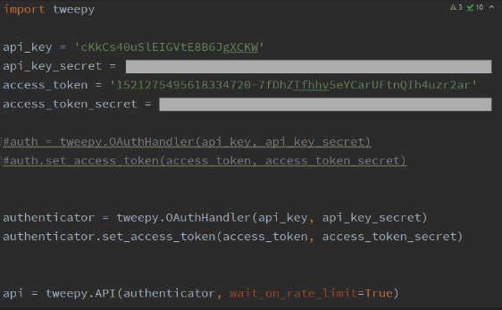
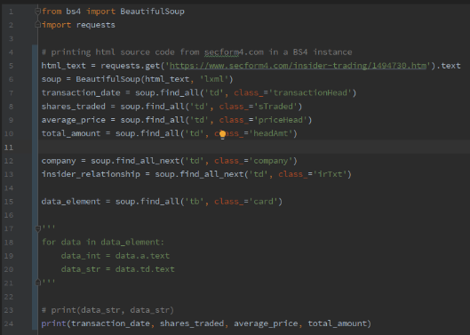
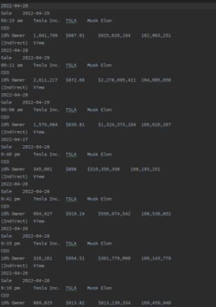
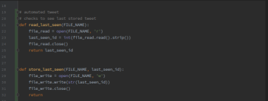

I and two classmates (Dhakshin Parimalakumar and Trent Clatanoff) from Advanced Computer Science II collaborated on this Independent Study Project in 2022.
Our ISP in 2022 was a Twitter bot which automatically tweeted stock transactions of well-known figures in politics. A slideshow explaining the project is linked
hereWe made a Twitter bot which reports live stock trades from a list of 25 congressional representatives who stock traders commonly believe perform "Insider Trading." "Insider trading" is the buying or sellingof a company's stocks or other securities by individuals with access to confidential information relating to the company. Essentially, politicians who can pass legislation could potentially affect the economic performance of a corporation, resulting in a change in its stock price. By having some control over the stock price of a company, one of these politicians could shift the market in favor of the stocks they own, creating an unfair andvantage for themselves.

Tweepy is a python library used to simplify communication between Python and the Twitter API. Here, we use tweepy to link our file to a specific Twitter account. We create a public and private api key and access token, then use those to authenticate our Twitter account through tweepy's built-in functions. The final line creates the API and specifies wait_on_rate_limit=True, which tells Tweepy not to take any actions when it has reached Twitter's limit for bot activity

BeautifulSoup is a Python library that facilitates web scraping. Web scraping is the act of pulling information from websites through their source code, which usually uses HTML. Here, we use BeautifulSoup to scrape tthrough data cells from our source website to find the transaction date, # of shares traded, average price of shares, total price of shares, company of the shares, and the relationship of the buyer/seller to the specific stock. Finally, the transaction date, # of shares traded, average share price, and total share price are printed.

This is a compilation of scraped data using the previous code snippet. Here, the date, type of transaction, time, company, buyer/seller, etc. are printed. Each transaction is represented by a few printed lines.

These functions read and write Tweet IDs to a file. The first funciton takes a filename as input, opens that file in read mode, saves an int of the ID in that file, closes the file, and returns the ID. The second function takes a filename and id as input, opens the given file in write mode, writes the given id into the given file, and closes the file.
Our coding using BeautifulSoup went as expected. This was because BeautifulSoup is a very intuitive Python library and we had already studied it before starting to write the code for our Twitter bot.
Some unexpected aspects of development, on the other hand, included initially connecting to Twitter and managing the rate at which our bot tweeted.
Our first main challenge was setting up our developer account. On Twitter, there is a standard process for creating a bot account, which includes marking your account as a bot account to avoid confusion as to whether accounts are bots or real people. Also, getting our api key to match the authenticator and connecting our account to the Tweepy API was more difficult than we had anticipated.
Also, we initially forgot to limit the number of Tweets our bot could create. We didn't tell the bot to stop Tweeting once it hit its rate limit, so it tweeted every available data point from our database. As a result, Twitter temporary flagged our account for spam.